港九茶葉行商會
Hong Kong & Kowloon Tea Trade Merchants Association
1946 籌組 · 1948 正式成立
Hong Kong & Kowloon Tea Trade Merchants Association
1946 籌組 · 1948 正式成立
會員與會務動態（只刊載可查證的公開資訊）
2026 年 10 月
本會於 2026 年 10 月舉行國慶聯歡晚宴，會員與友好聚首同慶；是次晚宴已收錄於商會官網《活動重溫》。
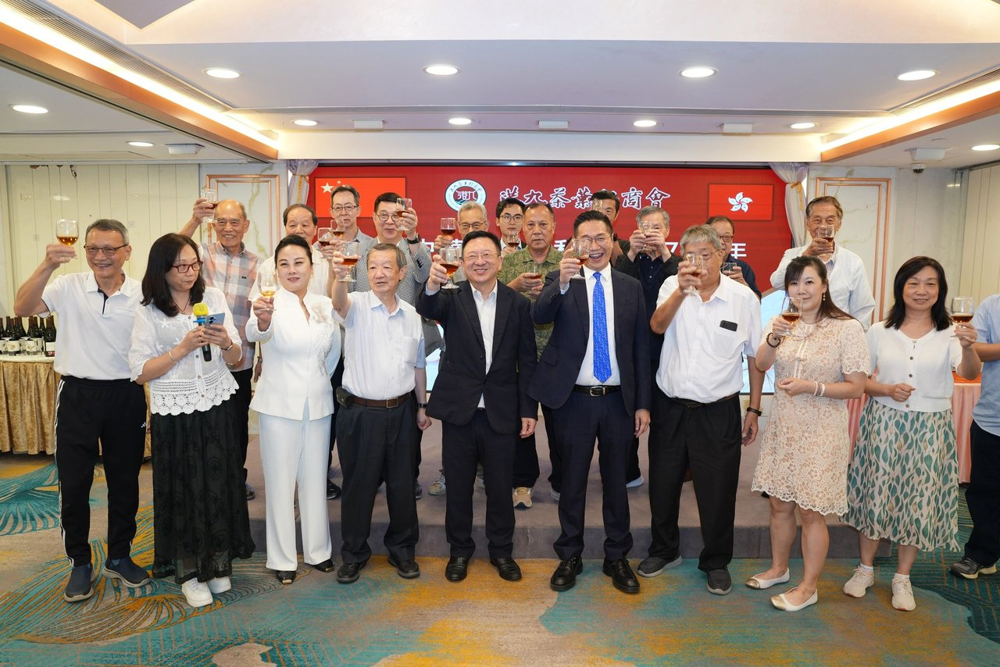
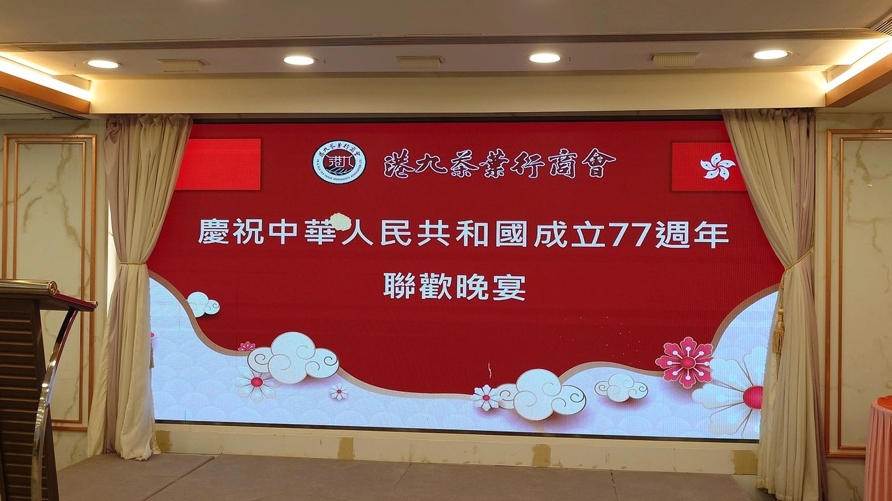
來源：商會官網《活動重溫》
2026 年 8 月 13–15 日 · 香港會議展覽中心
本會參與 2026 年香港國際茶展。據報道，本會監製的七十周年紀念普洱生茶（400 克青餅，為本會 2016 年限定訂製）參加「香港國際茶展名茶比賽 2026」，榮獲亞軍。
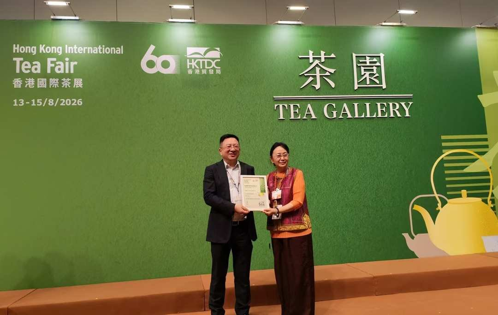
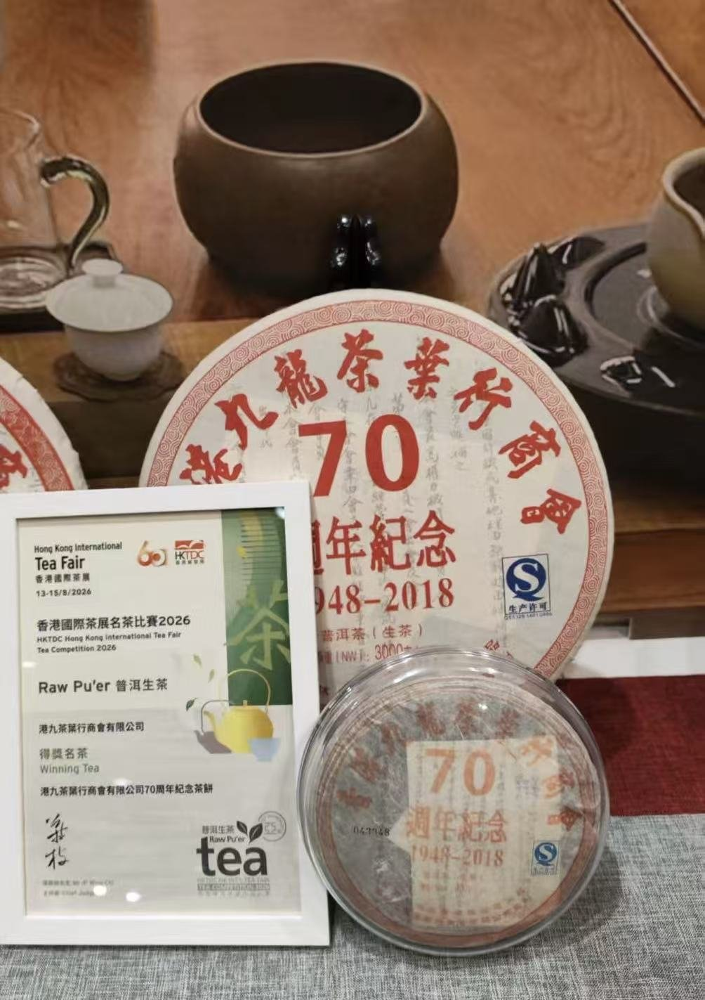
來源：華人頭條 2026 年 8 月 16 日報道
2026 年
本會於 2026 年會員大會春節聯歡晚宴上，舉行第二十三屆理監事就職典禮，林偉德先生出任第二十三屆理事長。
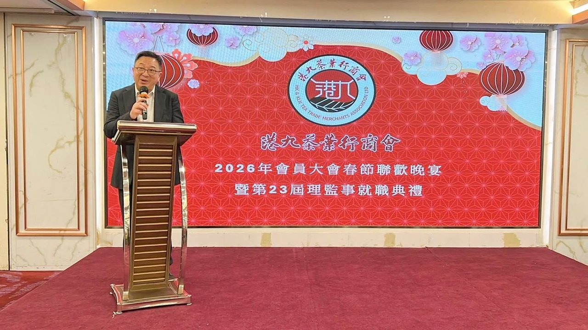
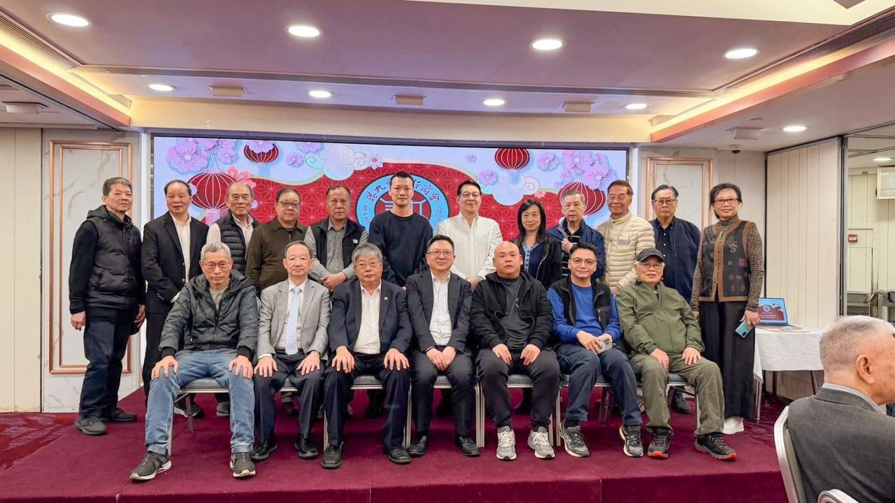
來源：商會官網《活動重溫》
2026 年 3 月
2026 年 3 月 13 日，星島頭條刊登專題報道，以本會為主線回顧香港茶葉貿易的變遷：昔日內地茶葉經總代理德信行分銷，並釐定六間「頭盤商」主理不同茶類——林品珍主理烏龍、永生祥主理白茶、匯源主理普洱、元亨主理六堡、東榮主理紅茶、協豐主理龍井，其餘百餘家為二盤商；1960 年代為行業頂峰，改革開放後層層分銷架構逐漸打破。報道並引述本會理事長林偉德的補充說明。

來源：星島頭條 2026 年 3 月 13 日報道
2026 年 1 月 · 中環元創方（PMQ）
本會茶文化推廣活動「TEA ROUND 2026 茶迴」於 2026 年 1 月在中環元創方（PMQ）舉行，向公眾推廣茶文化；本會於 2025 年 1 月亦曾參與「TEA ROUND 2025 茶迴」。
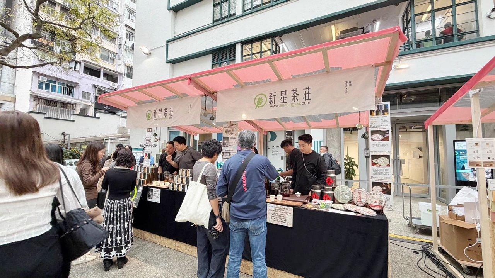
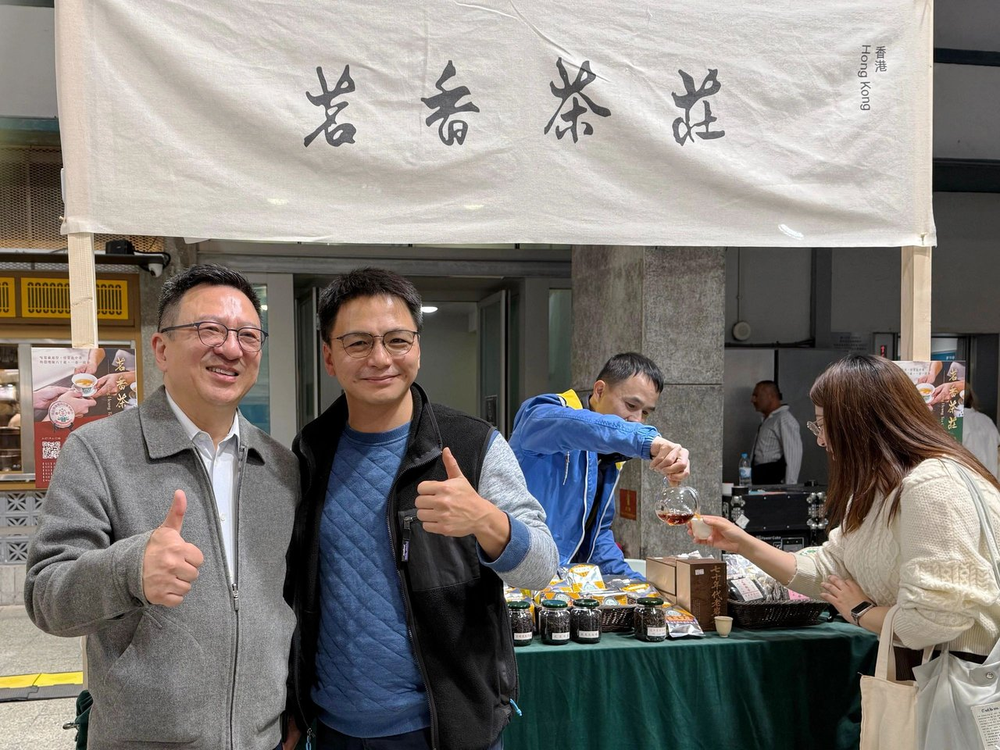
來源：商會官網《活動重溫》
2025 年 8 月 14–16 日 · 香港會議展覽中心
由香港貿易發展局主辦的第 16 屆香港國際茶展於 2025 年 8 月 14 至 16 日在香港會議展覽中心舉行。本會作為香港國際茶展的協辦方，第二次參展並設立獨立展館。展館匯集香港虎標、林奇苑茶行、華山茶業、嶺南茶葉公司、顏奇香茶莊等多家知名會員企業，推廣傳統茶工藝與港倉茶文化，彰顯香港茶產業的多元面貌。
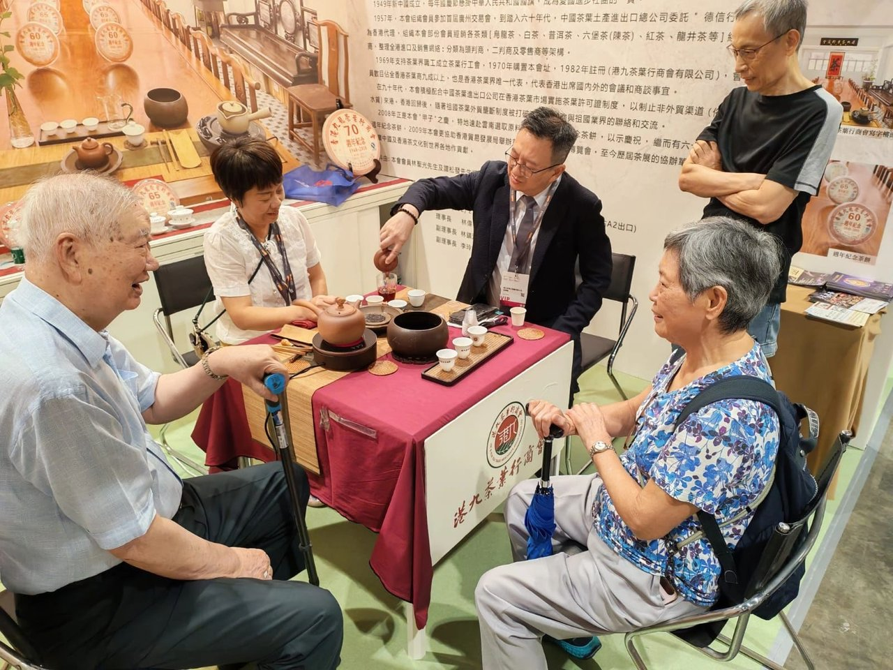
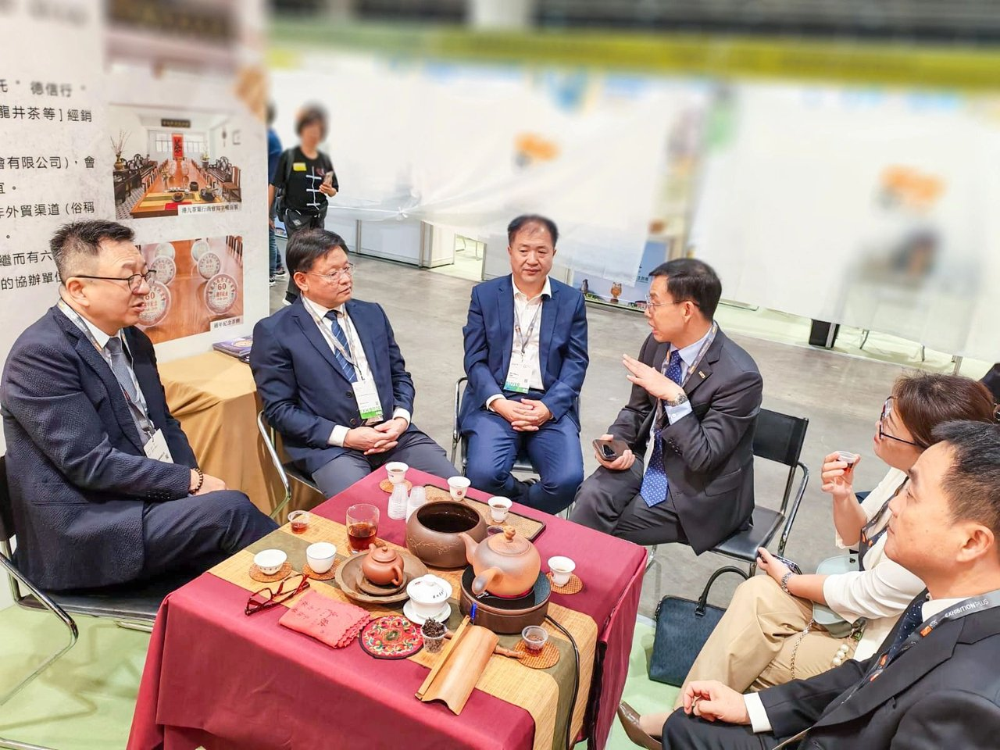
來源：香港新聞網 2025 年 8 月報道
自 2009 年起
2009 年，本會協助香港貿易發展局舉辦首屆香港國際茶葉博覽會；自此至今，本會為歷屆茶展的協辦單位，致力推廣中國及香港茶文化到世界各地。
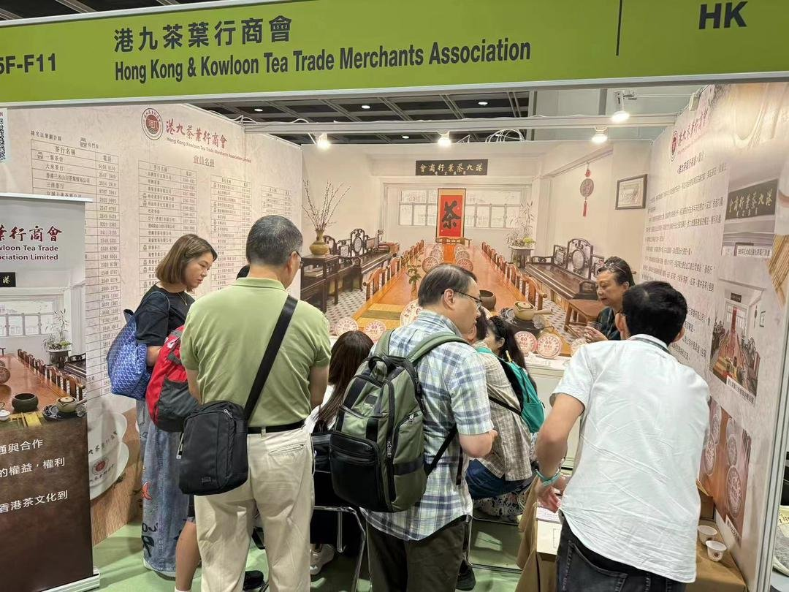
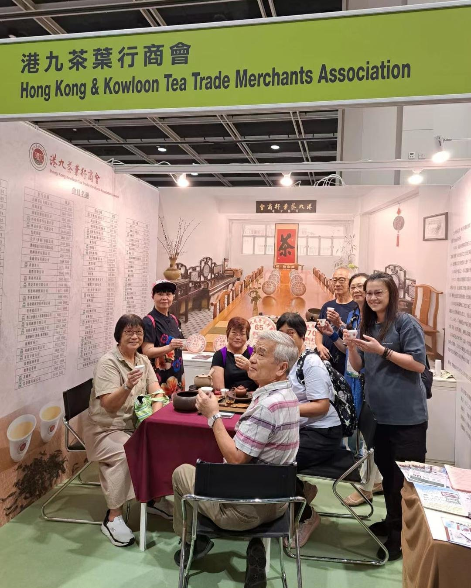
來源：商會官網《本會歷史》
更多本會消息，請參閱商會官網：www.hkkttma.org